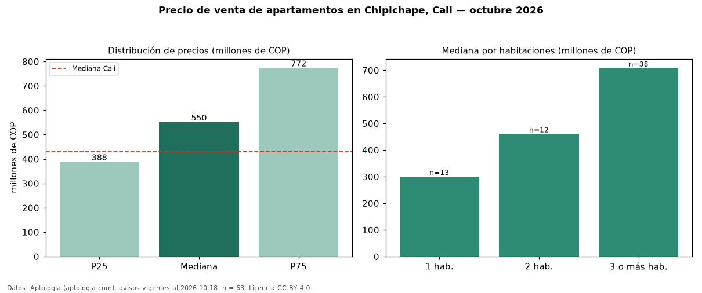

Precio de venta de apartamentos en Chipichape, Cali — octubre 2026
COP 550 millones es el precio mediano de apartamentos en venta en Chipichape, Cali (n = 63 avisos). Frente a la mediana de Cali para apartamentos (COP 430 millones), queda 28 % por encima. Por metro cuadrado, la mediana es COP 6,31 millones/m² (n = 63 avisos con área), 36 % por encima de Cali (COP 4,65 millones/m²). El área mediana anunciada es 110 m². El segmento con más oferta es el de 3 o más habitaciones (38 avisos, mediana COP 708 millones); pasar de 1 habitación a 3 o más habitaciones cambia la mediana +136 %. La administración mediana declarada es COP 800.000 al mes (n = 48). La mitad central de los avisos va de COP 388 millones a COP 772 millones (razón 2,0), una dispersión moderada. Por precio mediano es el puesto 21 de 66 barrios de Cali con al menos 30 avisos de apartamentos en venta (COP): en la franja media. Datos: Aptología (aptologia.com), CC BY 4.0 — https://www.aptologia.com/venta/cali/chipichape. Archivos: PDF, CSV con las cifras y gráfica PNG.

| Avisos únicos | 63 |
|---|---|
| Percentil 25 | COP 387.500.000 |
| Mediana | COP 550.000.000 |
| Percentil 75 | COP 772.500.000 |
| Mediana por m² | COP 6.314.102 |
Fuente: avisos vigentes de portales inmobiliarios recopilados por Aptología, deduplicados (mínimo 30 avisos únicos por celda). Precios pedidos, no cerrados. Fecha: 2026-10-18.